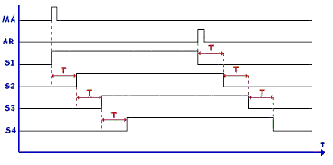

|
Um jeglichen Mehrverbrauch beim Anlauf eines Kessels zu vermeiden, wird ein Leistungsanstieg der Heizelemente programmiert.
Analog dazu wird für die Abschaltung des Kessels eine degressive Abschaltung der Heizelemente
programmiert. Die Funktionsweise kann wie in folgendem Chronogramm dargestellt definiert werden:  Ein Ein-Schalter (MA) ermöglicht die Aktivierung des ersten Heizelements (S1). Nach der Dauer T (Timer) wird das zweite Heizelement (S2) eingeschaltet. Nach derselben Dauer T werden das dritte Heizelement (S3), und erneut nach Ablauf von T, das vierte Heizelement (S4) eingeschaltet. Der Aus-Schalter (AR) deaktiviert S1. Die drei anderen Elemente werden ebenfalls nacheinander, jeweils nach Ablauf der Dauer T nach der Abschaltung des vorigen Elements deaktiviert. |